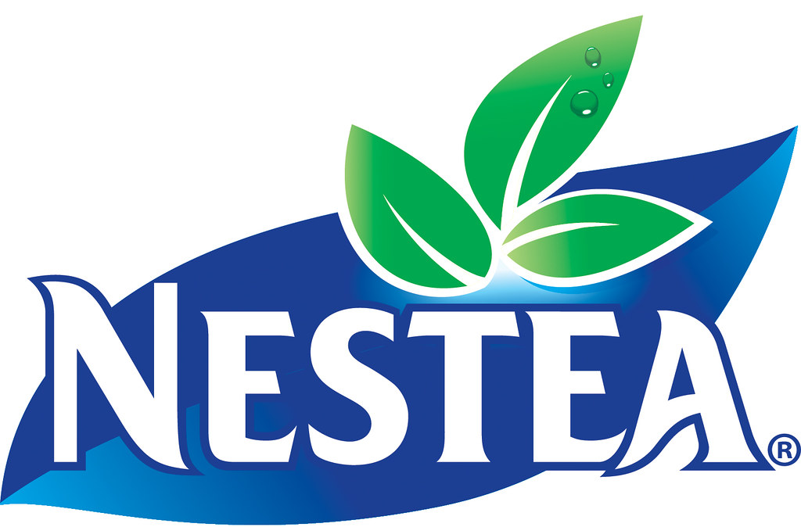

NESTEA.
PROJET PERSONNEL
Logo - Nestea
Refonte du logo de Nestea en vue d’une mise à jour de leur image qui servira les engagements environnementaux croissants de la marque, et cela sous la forme d’un design plus impactant et lisible aussi bien de près que de loin.
Conception
Modification de la typographie "Cyrene", choisie pour ses formes biomorphiques mais structurées, qui permettent d’amener l’idée d’une marque prenant position tout en exposant la relation qu’elle entretien avec l’écologie.
texte invisible
la traverse du E représente la source première du produit en prenant la forme d’une feuille. Lors de la ligature entre le T et le E référant au fil tenant le sachet de thé, le E deviens
le contenant du T.
Conception
Modification de la typographie "Cyrene", choisie pour ses formes biomorphiques
mais structurées, qui permettent d’amener l’idée d’une marque prenant position tout
en exposant la relation qu’elle entretien
avec l’écologie. La traverse du E représente la source première du produit en prenant
la forme d’une feuille. Lors de la ligature
entre le T et le E référant au fil tenant
le sachet de thé,
le E deviens le contenant du T.

Pour pouvoir mieux travailler avec la lumière, cruciale pour les théier, un dégradé est utilisé. Il donne également au logo plus de matière et de profondeur.
